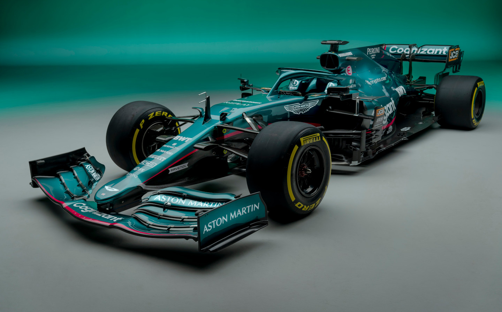
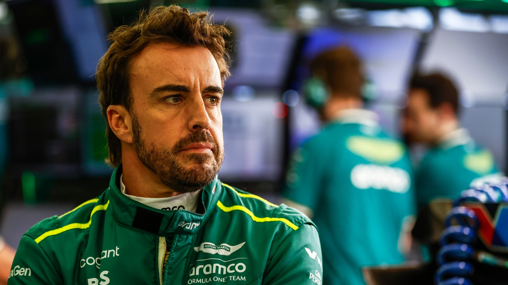

Aston Martin F1 Team, revenant sur la grille après une absence de soixante ans, incarne le mariage entre tradition et modernité dans le monde de la Formule 1. La légendaire marque britannique apporte son prestige et son héritage au sport, combinant l'élégance intemporelle de ses voitures de route avec la technologie de pointe de la compétition moderne. Avec un line-up de pilotes talentueux et une équipe dévouée, Aston Martin F1 vise à rivaliser au plus haut niveau, tout en captivant l'imagination des passionnés de sport automobile.
Fernando Alonso, pilote espagnol légendaire de la Formule 1, rejoint Aston Martin pour la saison 2021. Double champion du monde de F1, Alonso apporte une expérience inestimable et un talent exceptionnel à l'équipe. Connu pour sa détermination, son intelligence tactique et son incroyable vitesse, il est un véritable atout pour Aston Martin. Avec son retour tant attendu, Alonso ravive l'excitation des fans et promet des performances captivantes sur la piste.
